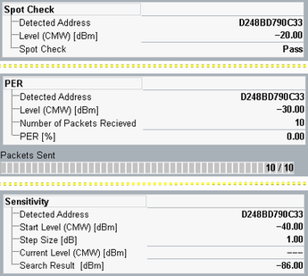

Rx Measurement Results
All results of the measurement are shown on the "Rx Meas" tab.
Non-signaling Rx measurements are only supported by R&S CMW100/CMW with MUA. |
The results are described below.

Rx measurement tab according to Rx measurement mode
The tables indicate settings and statistical measurement results according to the measurement mode.
The table shows the following statistical results:
- "Detected Address": device address of EUT. Both public and random address types are supported.
- "Level (CMW) [dBm]": Tx level of R&S CMW for SCAN_REQ transmission
- "Spot Check": pass / fail test verdict
The table shows the following statistical results:
- "Detected Address" and "Level (CMW) [dBm]": see spot check results above
- "Number of Packets Received": number of SCAN_RSP packets received by the R&S CMW since the start of a measurement
- "PER": packet error rate, the ratio of corrupted and missing SCAN_RSP packets to the total number of transmitted SCAN_REQ packets in percent
- "Packets Sent": number of SCAN_REQ packets transmitted by the R&S CMW. After the measurement start, this value indicates the number of transmitted packets and the total number of packets to be transmitted. Two equal numbers indicate that the measurement is finished.
The table shows the following settings and statistical results:
- "Detected Address": see spot check results above
- "Start Level (CMW) [dBm]": configurable initial Tx level of R&S CMW for SCAN_REQ transmission
- "Step Size [dB]": configurable power step to decrease the level of SCAN_REQ transmission
- "Current Level (CMW) [dBm]": actual Tx level of the R&S CMW
- "Search Result [dBm]": the last Tx level of the SCAN_REQ transmission, for which the SCAN_RSP packet was detected